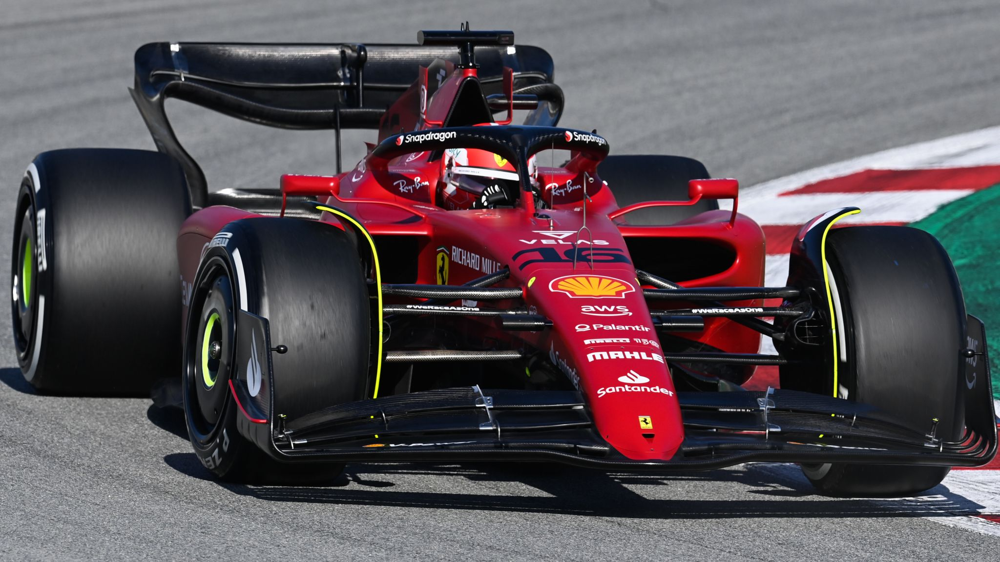
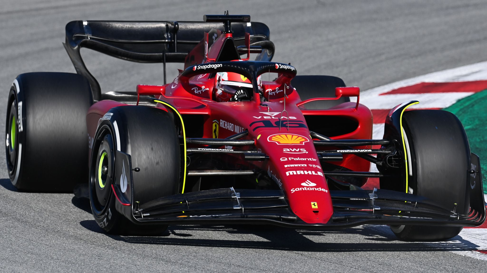

Charles Leclerc
Charles Leclerc, nato il 16 ottobre 1997 a Monte Carlo, è un pilota di Formula 1 monegasco attualmente in forza alla Scuderia Ferrari. Leclerc ha iniziato la sua carriera nel karting, dove ha ottenuto numerosi successi, prima di passare alle competizioni automobilistiche. Nel 2016 ha vinto il campionato GP3 e nel 2017 ha conquistato il titolo in Formula 2, impressionando con le sue abilità di guida e la sua determinazione. Questi successi gli hanno aperto le porte della Formula 1, dove ha debuttato nel 2018 con il team Sauber. La sua prestazione straordinaria ha attirato l'attenzione della Ferrari, che lo ha ingaggiato come pilota ufficiale per la stagione 2019. Fin dal suo primo anno con la squadra di Maranello, Leclerc ha dimostrato il suo talento vincendo il Gran Premio del Belgio e quello d'Italia, diventando rapidamente uno dei giovani piloti più promettenti del circus. Oltre alle sue capacità in pista, è noto per la sua umiltà, il suo spirito competitivo e la forte connessione con i tifosi.
 
